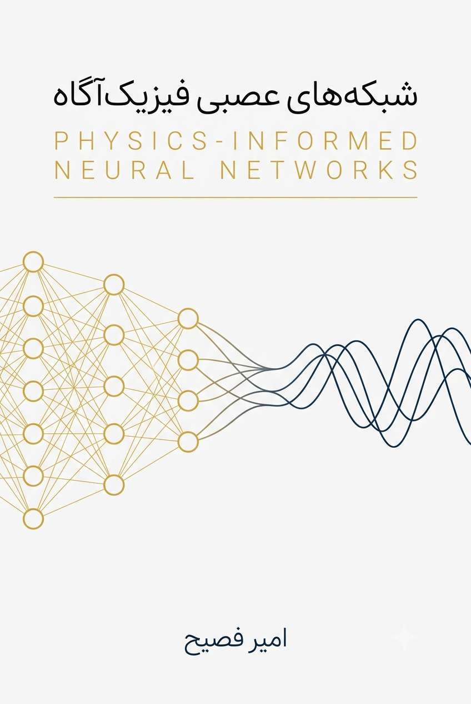

<

>
شبکههای عصبی آگاه از فیزیک
در مهندسی مکانیک
از مفاهیم پایه تا کاربردهای پیشرفته در ارتعاشات و کنترل
امیر فصیح
—
داوود یونسیان
دانشگاه علم و صنعت ایران
۱۴۰۴
📚 فهرست مطالب
پیشگفتار
شبکههای عصبی آگاه از فیزیک در مهندسی مکانیک
i
فصل ۱:
PINN
چیست و چه نیازی به آن داریم؟
۱
فصل ۲: شبکههای عصبی و چالشهای آنها در حل مسائل مهندسی
۲۵
فصل ۳: ساختار دقیق
PINN
و ریاضیات تابع هزینه
۴۳
فصل ۴: اولین
PINN
در
PyTorch
— حل
ODE
مرتبه اول
۶۲
فصل ۵: ورود به
PDE
— حل معادلهی انتقال حرارت یکبعدی
۸۹
فصل ۶: مسئلهی معکوس — شناسایی ضریب مجهول
۱۱۰
فصل ۷: مسائل پارامتریک — حل خانوادهای از مسائل با یک بار آموزش
۱۳۰
فصل ۸: تحلیل مودال و مسائل مقدار ویژه با
PINN
۱۵۰
فصل ۹: تخمین حالت و سنسور مجازی با
PINN
۱۷۰
فصل ۱۰: جعبهابزار عیبزدایی و پایدارسازی آموزش (
Survival Kit
)
۱۹۰
فصل ۱۱: چالش اول — اعمال دقیق شرایط مرزی (از روش جریمه تا قید سخت)
۲۱۰
فصل ۱۲: چالش دوم — انتخاب هوشمند نقاط کالوکیشن و معماریهای مقاوم
۲۳۰
فصل ۱۳: چالش سوم — مسائل معکوس بدحالت، نویز، و پروژه نهایی
۲۵۰
فصل ۱۴: چشمانداز پیشرفته —
DeepONet
،
FNO
، و
B-PINN
۲۷۰